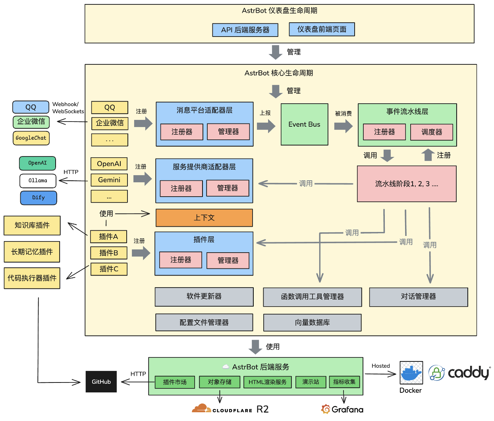
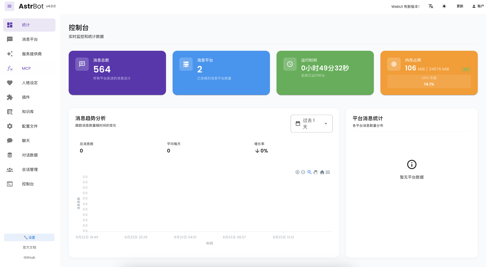

从零跑通 AstrBot：不会写代码也能搭一个自己的 AI 机器人
AstrBot 是一款能接入各大聊天平台的 AI 机器人框架。本文从完全零基础出发，一步步带你把它装起来、跑起来，顺便把新手最该先摸透的几个功能讲清楚。
这篇能带你从完全不懂到用起来——不用你会写代码，也不用你懂什么是"大模型 API"，跟着点几下就能把 AstrBot 搭起来、聊上第一句。
它到底是干嘛的
你可以把 AstrBot 想成一个"AI 机器人的组装台"。去AstrBot官网溜一圈就能看到它的完整介绍——它本身不带智能——智能是你接进来的各种大模型（比如 GPT、豆包、通义千问）——但它帮你把模型和聊天平台接好线，让机器人能在 QQ、Telegram、Discord、微信这些地方跟人对话。
更棒的是它的扩展性：你可以给机器人装技能包让它按固定流程干活，可以接 MCP 服务器让它去查论文、翻日历，还可以让它看图、读文件。这些能力都不是硬编码在里面的，全部按需加装。

五分钟上手：从下载到第一次跑通
下面是最短路径，跟着走不会踩坑。
第一步：拿到安装包。从 AstrBot 的下载页拿对应你操作系统的版本——Windows 用户直接下打包好的解压版就行，不用折腾 Python 环境。解压到一个没有中文路径的目录里，双击启动脚本（通常是 start.bat）。
第二步：打开管理面板。启动脚本跑完后，浏览器里会自动弹出一个地址（一般是 http://localhost:8080），这就是管理面板。默认用户名和密码在AstrBot文档里能找到，第一次登录后建议立刻改掉。
第三步：接入一个大模型。面板里找到"AI → 提供商"，选一个你有 API Key 的服务商（没有的话豆包、通义都有免费额度），把 Key 粘进去，选一个模型保存。测试一下对话能不能返回东西——能返回就说明模型接好了。
第四步：接入第一个聊天平台。面板里"消息平台"那边，选一个你用的（新手推荐 QQ 或 Telegram），按提示填一下机器人的 Token 或 AppID。保存之后启动这个平台插件。
就是这四步。当你在聊天平台里 @ 机器人说第一句话、它回你消息的那一刻——恭喜，你已经把 AstrBot 跑通了。

上手后先玩这三个功能
跑通只是起点。下面三个功能是新手最值得先摸透的，每一个都能让你对"这个框架到底能干嘛"有全新的理解。
装一个 Skills 技能包
Skill（技能）是 AstrBot v4.13.0 引入的概念——你可以把它理解成一份"给机器人看的操作手册"。一个技能包就是一个文件夹，里面放一份叫 SKILL.md 的说明文件，写清楚"遇到某类任务时该按什么步骤做"，还能附带辅助脚本。
上传很简单：面板里找到"插件 → 技能"，右下角点加号，把 ZIP 包拖进去就行。上传完别忘了两件事：一是去"AI → 能力"里配一下运行环境（选 local 让它用你这台机器的环境），二是回到人格设定里勾选这个技能——不勾选等于没激活。
激活之后怎么触发？直接在对话里说"使用 weekly-report 技能，把以下记录整理成周报"就行。
你会发现：机器人不再只会瞎聊天，它会按你写好的步骤一步步执行任务。这意味着什么？意味着你可以把重复的手工活打包成技能，让机器人帮你做。
接入一个 MCP 服务器
MCP（Model Context Protocol，模型上下文协议）是最近很火的一个开放协议——简单说，它让 AI 应用能调用外部工具。一个 MCP 服务器就是一组能被 AI 调用的工具：接了论文检索服务器就能"帮我找最近的 RAG 论文"，接了日历服务器就能查日程。
AstrBot 原生支持 MCP，入口在"插件 → MCP"。新手最省心的连接方式是 Streamable HTTP——服务商给你一个远程地址，你粘进去，点"测试连接"，能返回工具列表就成了，不用装任何额外环境。
连接成功之后还不能用。你得去人格设定里，在工具列表里把这个 MCP 服务器的工具勾选上。然后用明确的任务试探一下——"检索最近关于多模态 RAG 的论文，给我标题和链接"——如果它真的去查了，说明接线成功。
试试多模态对话
不是所有模型都"看得见"图片。但你接的模型如果支持视觉输入（各家旗舰模型大多支持），就可以在聊天里直接发图、发文件、发语音给机器人。
两条通道都能用：如果你接了 QQ 或 Telegram 平台，直接在聊天里发图就行；或者用内置 ChatUI（管理面板左边菜单里能进），上传附件还有预览，调试多模态行为最方便。
几个注意点：图片要清晰，文字可辨；大文件有上限，报错时先看日志；敏感内容先脱敏，隐私需求可以考虑走本地模型（Ollama 一类）。
小白的三个常见疑问
下面这些问题是新手 FAQ 里出现频率最高的，提前知道能帮你省掉好几个小时的排查时间。
为什么机器人不回复我？ 先别急。最常见的三个原因：模型 API Key 没配对（去"AI → 提供商"里测试一下能不能调通）；消息平台插件没启动（看面板里插件列表是不是显示"已运行"）；你可能没 @ 它——有些平台默认只响应 @ 或者特定前缀的消息。
我怎么变成管理员？ 两步搞定：在聊天里给机器人发 /sid，它会返回你的用户 ID；然后去管理面板"访问控制 → 管理员"里把这个 ID 加进去，保存。管理员能做的事比普通用户多很多——比如切模型、管插件、改机器人名字。电脑能力（让机器人读写文件、跑代码）默认只对管理员开放，这是 AstrBot 的安全设计，别乱改。
为什么上传了技能包但触发不了？ 先检查三件事：运行环境配了没有（local / sandbox 二选一，none 的话技能说明都读不了）；人格里勾选了这个技能没有；触发时有没有明确提及技能名和意图。还有一个容易忽略的细节——同名技能不会被覆盖，更新技能要先删旧的。
接下来往哪走
跑通、玩熟上面三个功能，你就已经超过 80% 的新手了。接下来可以考虑接一个 Agent 沙盒环境——让机器人在隔离的虚拟环境里跑代码，这才是真正的"让 AI 动手干活"。
这套框架的开源社区很活跃，文档也一直在更新。偏好不同托管平台的读者可以各取方便——GitHub 上有完整的英文镜像，Gitee 对国内访问更友好，GitCode 则是另一份热更新的备份。不管你是想搭一个个人助理、做一个群聊里的问答机器人，还是想搞点小项目练手，AstrBot 都是一个不错的起点。